Operating Documentation
Direction 5500113, Rev# 3
Discovery MR750 3.0T Service Methods
Module Version 9.0, Version Date 9/16/10
Operating Documentation |
| Required Persons | Preliminary Reqs | Procedure | Finalization |
|---|---|---|---|
| 3 | 8 hours |
This procedure describes the replacement of the XRMB coil in the 1.5T LCC and 3.0T LCC300 magnets.
| Item | Qty | Effectivity | Part# | Manufacturer | |
|---|---|---|---|---|---|
| Gradient Coil Insertion Kit | 1 | - | 2164744-6 | - | |
| XRMB Water Removal Pump Kit | 1 | - | 5269683 | - | |
| HDv Passive Shim Tray Extraction Tool | 1 | - | 5172460 | - | |
| Non-Magnetic Tools Kit | 1 | - | 5112581 | - | |
| 5 Gallon Pail | 1 | - | 2239133 | - | |
| Air Seal | 1 | - | 5313540 | - | |
| Nonabsorbent Protective Clothing (long sleeve shirt and pants), one set per person | 1 | - | - | - | |
| Nonferrous Safety Shoes, one pair per person | 1 | - | - | - | |
| Safety Glasses, one pair per person | 1 | - | - | - | |
| General-Duty Gloves, one set per person | 1 | - | - | - | |
| Floor Sign, Warning: Authorized Personnel Only (included in Safety Signage Kit 46-258770G4 | 1 | - | - | - | |
| Extension Cord | 1 | - | - | - | |
| Item | Qty | Effectivity | Part# | Manufacturer |
|---|---|---|---|---|
| Isopropyl Alcohol | 1 | - | - | - |
| Tie-Wraps | 100 | - | - | - |
| Red Loctite® #271 | 1 | - | - | - |
| XRMB Coolant Fluid in 1 gallon container Note: Approximately 15 gallons of coolant fluid is needed for each XRMB installation. FE will decide which type of container to order. | 15 | - | 5174313 | - |
| XRMB Coolant Fluid in 5 gallon container Note: Approximately 15 gallons of coolant fluid is needed for each XRMB installation. FE will decide which type of container to order. | 3 | - | 5174313-2 | - |
| ||||
| STRONG MAGNETIC FIELD! | ||||
| FERROUS MATERIALS CAN BECOME DANGEROUS PROJECTILES IN THE PRESENCE OF THE MAGNETIC FIELD PRODUCED BY THE MAGNET. | ||||
| DO NOT BRING ANY FERROMAGNETIC TOOLS OR EQUIPMENT INTO THE MAGNET ROOM. |
| ||||
| Personal injury and equipment damage | ||||
| Strong Magnetic Field | ||||
| When servicing any magnetic equipment, it is critically
important that the service engineer consciously plan the path to be
taken when moving highly ferrous devices in the magnet environment.
the path should be as far from the magnet as practical and avoid high
flux-density fields. Safety Requirements
When planning a service path, it is critical that the path be clear and sufficiently wide. Ensure that there are no trip hazards, obstacles, clutter, slippery surfaces or other items even partially restricting the path. If there are portable obstacles in a path, remove them from the area and replace them after the service action is completed. It is required to walk the path prior to beginning service to ensure that there is sufficient space through which to pass for yourself and the object being serviced. |
| ||||
| The jack on the Tube Jacking Assembly is ferrous. | ||||
| Personal injury or equipment damage may result if taken too close to the magnet. | ||||
| Keep as far away from magnet bore as possible when removing from magnet room. Always keep the tube jacking assembly mounted and screwed to the Aluminum coil cradle when used in the magnet room. |
| ||||
| ELECTRICAL SHOCK HAZARD! | ||||
| CONTACT WITH CONNECTORS LEADING TO AN ENERGIZED POWER SUPPLY CAN CAUSE ELECTRICAL SHOCK. | ||||
| FOLLOW LOCKOUT/TAGOUT (LOTO) PROCEDURES WHILE PERFORMING SERVICES TO ELECTRICAL CONNECTION COMPONENTS. |
| ||||
| ELECTRICAL SHOCK HAZARD! | ||||
| COOLANT CIRCULATING THROUGH THE GRADIENT COIL IS IN CONTACT WITH LIVE ELECTRICAL CONDUCTORS. USING WRONG TYPE OF COOLANT MAY RESULT IN ELECTRICAL SHOCK. | ||||
| ALWAYS USE COOLANT SPECIFIED BY THE GRADIENT COIL SERVICE PROCEDURE. |
| ||||
| Dangerous Work Area! | ||||
| Use of heavy equipment for coil removal and replacement presents hazards to all personnel in the area. | ||||
|
| Condition | Reference | Effectivity |
|---|---|---|
Power to XGD Cabinet is turned off and LOTO procedures are implemented. | - | - |
Coolant circulation pump is turned off and LOTO procedures are implemented. | - | - |
Remove end bells and Patient Support Bridge in the magnet bore in conformance with the appropriate procedures before starting to install a gradient coil. | - | - |
If the magnet is ramped, remove all passive shim trays from the XRMB coil prior to the installation and store them in a safe place. See "Reference" column for applicable documentation containing procedures for removing the passive shim trays. Passive shim trays are highly ferrous. Heed all warnings in safety section 3.3. | Procedure for replacing shim trays can be found in the Magnet and Cryogens Subsystem Manual. For MR750, see Direction Number 5500099. For MR450, see Direction Number 2325852. | - |
Verify that the coolant circulation pump is turned off and the LOTO procedures are implemented for the coolant line services. See LOTO for Heat Exchanger Cabinet (HEC).
Turn off both PVC valves in XRMB coolant Supply (blue hose) and Return line (black hose).
Obtain a bucket.
| ||||
| Cutting Hazard! | ||||
| Use of a knife to cut a hose presents a hazard to all personnel in the area. | ||||
| Use a nonferrous knife, make sure no personnel are in front of you, make sure fingers are clear of cutting area, and always cut away from your body. |
| NOTE: | Do not cut the barb fittings out of the hoses unless the
XRMB coil needs to be drained and returned. This process ensures there
will be enough length of hose to reconnect the fitting to the valve. The connection between hose and fitting is pressure only. To properly remove hose from fitting, carefully cut a slit on the hose but do not damage the water fitting; if coil needs to be drained, carefully make a slit on the manifold hose and slide it off the barb to disconnect the Supply Manifold from the fitting. Repeat for Return line. Must retain fitting at the site. |
To remove the XRMB manifold hoses from the PVC valves, use wrenches to unthread the barb fitting from the PVC valve.
Illustration 1: Barb Fitting and Valve
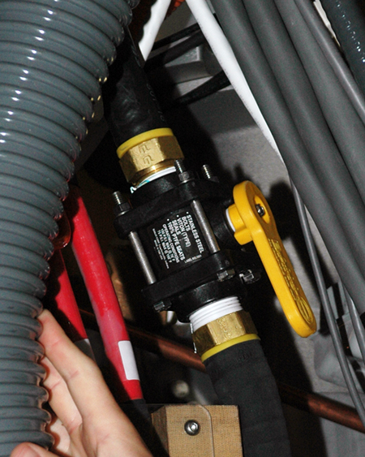
| ||||
| There is coolant water inside the Manifold. Keep the Manifold in upright position to prevent water spill. | ||||
Slowly disconnect the Supply and then the Return Manifold from the valve. Drain fluid into bucket.
Join the Supply and Return Manifold together using a zip tie; kink, if necessary. (This is to form a close loop of the coolant line so water will not spill out during the XRMB coil removal.)
Refer to XRMB Busbar Removal for procedure.
| ||||
| The copper leads of the Busbar Assembly must be protected to
avoid distortion. Place the Busbar at a location that is safe for
the copper leads. Do NOT lift the Busbar Assembly by holding the leads. | ||||
Pull the Busbar Assembly off the Magnet and carefully place it in a safe location.
Obtain the two Tube Guide Roller Assemblies (5308402) and XRMB Mounting Plates (5161983, 5161985) from the Gradient Coil Insertion and Lift Kit's shipping crate. Make sure the Tube Guide Roller Assemblies are tightly attached to the XRMB Mounting Plates. (See Illustration 2.)
Illustration 2: Roller Assembly and Mounting Plate

Install the Patient End Mounting Plate 5161985 (with a Tube Guide Roller Assembly) on the gradient coil's patient end and the Service End Mounting Plate 5161983 (also with a Tube Guide Roller Assembly) on the gradient coil's service end. Use the M10 x 25 SS Hex Cap screws (46-318508P20) included in the Gradient Coil Insertion and Lift Kit. (See Illustration 3.)
Illustration 3: Mounting Plates with Roller Assemblies
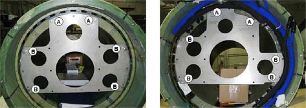
Obtain Tube Support Plate Assembly 2284928-2 from the Gradient Coil Insertion and Lift Kit's shipping crate.
Adjust the Tube Support Plate Assembly's Horizontal Adjustment Screws until the Tube Support Bearing is centered left-to-right. (See Illustration 4.)
Illustration 4: Support Plate

Attach the Tube Support Plate to the magnet service-end using the 100 mm M10 x 25 SS studs (5303994), SS M10 nuts and washers included in the Gradient Coil Insertion and Lift Kit. Make sure the four extension spacers face towards the Magnet Interface Ring (Illustration 5) and nuts are securely tightened.
Illustration 5: Support Plate Attached on Interface Ring

Remove the eight (8) brass bolts and G10 washers that are securing the XRMB Wedges to the front of the magnet shown in Illustration 6.
Illustration 6: Removing Brass Bolts
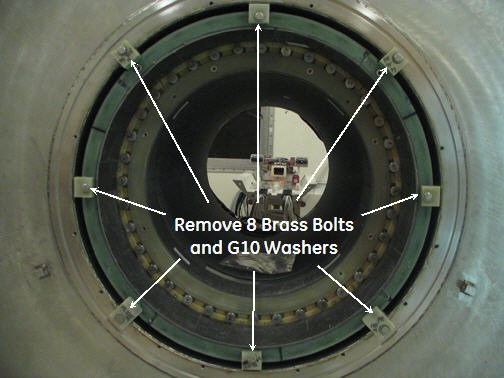
Remove Wedges at 0°, 45°, 90°, 270° and 325° locations from the front of the magnet. Note the location of individual wedges as they are different.
At the rear end of the magnet, remove four (4) wedges from 45, 90, 270 and 325 degree. (The three (3) lower wedges (135, 180 and 225 degree) shall remain on the rear end of the magnet. See Illustration 7.
Illustration 7: Lower Wedges
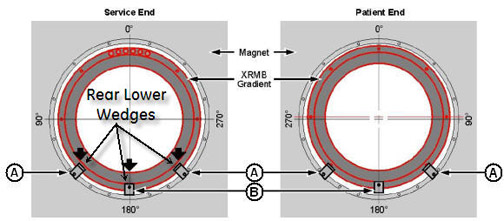
Maneuver the Gradient Insertion Cart to the patient-end of the magnet. Position the cart in front of the magnet with a gap of at least 2 inches (50.8 mm) between the cart and the Magnet Interface Ring. The two-inch gap (shown in Illustration 8) is required for lower wedges removal.
Illustration 8: Two-inch Gap Between Magnet and Cart

Center the cart left to right with respect to the magnet bore.
Release the hand lever on the cart handle to set the brakes. (This will keep the cart from moving after the cart is aligned with the bore.)
| ||||
| The jack on the Tube Jacking Assembly is ferrous. | ||||
| Personal injury or equipment damage may result if taken too close to the magnet. | ||||
| Keep as far away from magnet bore as possible when removing from magnet room. Always keep the tube jacking assembly mounted and screwed to the Aluminum coil cradle when used in the magnet room. |
Place Tube Jack Assembly (5191132) in the cart, and make sure the back of the Jack Assembly fits properly into the cart. (See Illustration 9.)
Illustration 9: Jack Assembly Placement
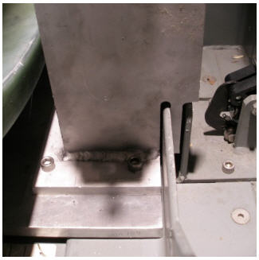
Obtain the Male Insertion Tube (2284929) and XRMB Tube Standoff (5191626).
Attach the Tube Standoff to the Male Insertion Tube using the four-inch, 0.375-16UNC Hex Socket Screw (5303993) included in the Gradient Coil Insertion and Lift Kit.
Once the Standoff is secured to the Tube, attach the Tube Pilot Shaft to the Standoff as shown in Illustration 10.
Illustration 10: Attaching Standoff to Insertion Tube

Remove the PVC shield from the brass thread of the Male Insertion Tube.
Illustration 11: PVC Shield for Brass Thread
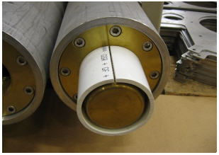
Refer to Illustration 12. Slide the Male Insertion Tube, with the Standoff attached, through the Tube Guide Roller Assemblies at both sides of the XRMB.
Push the Pilot Shaft through the Support Plate mounting bearing.
Insert a nonmagnetic safety pin through the hole in the Pilot Shaft.
Illustration 12: Tube Pilot Shaft and Support Plate
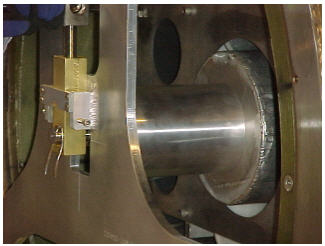
| ||||
| Do not force the threads. Make vertical or horizontal adjustments to the cart or Tube Support Bearing, as necessary, to make the threading easier. | ||||
Obtain the Female Insertion Tube from the shipping crate (may require two persons). While one person is holding the Male Insertion Tube to keep it from rolling, the other person should thread the two Tubes together as shown in Illustration 13.
| NOTE: | Each of the two pieces of the gradient insertion tool weighs less than 35lb (15.9kg). |
Illustration 13: Setting up the Insertion Tube Assembly
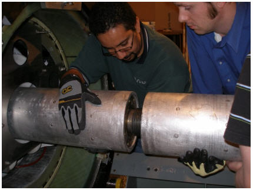
Recheck the centering of the cart left to right with respect to the magnet bore, and adjust the cart's longitudinal alignment if required.
| ||||
| Keep the XRMB Coil approximately level with the magnet bore during the lifting. | ||||
Raise the Tube Jack and the Support Plate mounting bearing simultaneously to lift the XRMB Coil up.
Illustration 14: Raising XRMB Coil
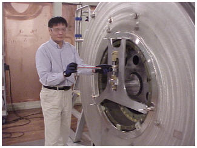
Remove the lower 3 wedges from the front of the Magnet only. (Should be able to freely rotate the coil.)
Slowly push the XRMB coil out of the magnet bore while watching the clearances to the left, right, top and bottom. Adjust the Tube Jack and Support Plate mounting bearing as required to keep the gradient coil from touching the magnet bore surface.
Rotate the XRMB coil until the Return coolant line at service-end is oriented downward.
Gradually lower the Tube Jack and the Support Plate bearing until the weight of the XRMB coil settles on the cart.
| ||||
| Possible Equipment Damage or Personal Injury | ||||
| Failure to properly secure coil to cart can result in equipment damage or injury. | ||||
| XRMB Coil must be properly secured to coil cart. |
Properly secure XRMB coil to the cart.
Using three people, move XRMB coil and cart out of the Magnet Room.
| NOTE: | Only drain if shipping coil. See XRMB Coil Water Removal. Remove barb fitting if draining is necessary. |
Obtain the Water Removal Pump Kit shown in Illustration 15.
Illustration 15: Water Removal Pump Kit
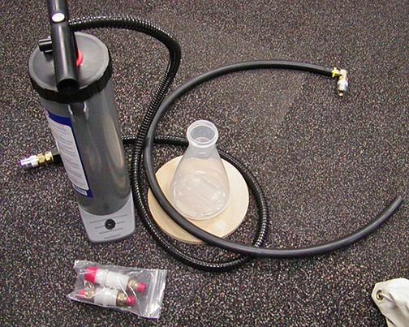
Connect the supply hose from the coolant removal pump kit to the Supply Manifold of the XRMB Coil with the one-inch barb adapter.
Place the Return Manifold hose into a container (5 gallons or greater volume capacity). Allow the water to drain by itself for two to three minutes, using the coolant removal barb adapter to drain hose as required.
Start pumping with the hand pump.
Observe the water level inside the container, and swap to a different container when the previous one is full.
Repeat Step 27 until the water no longer drains from the XRMB Coil.
Close the coolant line loop by joining the Supply and Return Manifold together.
Wipe the magnet bore using a clean towel and isopropyl alcohol as shown in Illustration 16.
Illustration 16: Cleaning Magnet Bore
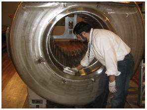
Examine the electrical connection terminals at the XRMB Coil service-end. If necessary, clean the terminal surface with isopropyl alcohol.
Remove the shipping brackets (Illustration 17 ) securing the XRMB Coil to the cart.
Illustration 17: XRMB Shipping Bracket
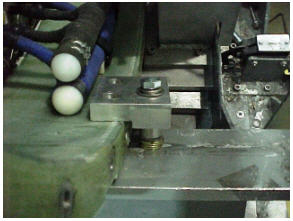
Remove the Gradient Coil cradle fasteners, two per side, from the cradle. (See Illustration 18.
Illustration 18: Removing Cradle Fastener

Use a vacuum cleaner to clean the XRMB Coil inside and out. Remove any possible metallic dust/shavings from the coil.
Obtain the two Tube Guide Roller Assemblies (5308402) and XRMB Mounting Plates (5161983, 5161985) from the Gradient Coil Insertion and Lift Kit's shipping crate. Make sure the Tube Guide Roller Assemblies are attached to the XRMB Mounting Plates. (See Illustration 19.)
Illustration 19: Roller Assembly and Mounting Plate
Obtain the Male Insertion Tube (2284929) and XRMB Tube Standoff (5191626).
Attach the Tube Standoff to the Male Insertion Tube using the four-inch, 0.375-16UNC Hex Socket Screw (5303993) included in the Gradient Coil Insertion and Lift Kit.
Once the Standoff is secured to the Tube, attach the Tube Pilot Shaft to the Standoff as shown in Illustration 20.
Illustration 20: Attaching Standoff to Insertion Tube
Remove the PVC shield from the brass thread of the Male Insertion Tube.
Illustration 21: PVC Shield for Brass Thread
Install the Patient End Mounting Plate 5161985 (with a Tube Guide Roller Assembly) on the gradient coil's patient end and the Service End Mounting Plate 5161983 (also with a Tube Guide Roller Assembly) on the gradient coil's service end. Use the M10 x 25 SS Hex Cap screws (46-318508P20) included in the Gradient Coil Insertion and Lift Kit. (See Illustration 22.)
Illustration 22: Mounting Plates with Roller Assemblies
Attach the 135° and 225° XRMB Wedges (5154485) to the service-end magnet flange using one M10 x 30 brass bolt (5110638-64) and two G10 flat washers (5146169).
| NOTE: | These two wedges will serve as the positioning blocks for XRMB longitudinal (Z axis) alignment. |
To allow future adjustment, tighten the bolt only enough to secure the wedges.
Do not apply Loctite® at this time.
Illustration 23: Service-end positioning wedges
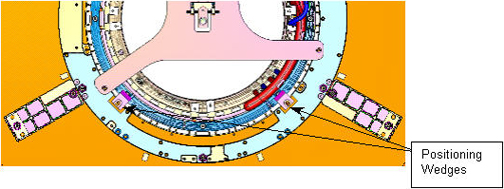
Maneuver the cart and XRMB Coil to the patient-end of the magnet. Position the cart in front of the magnet with a gap of at least 2 inches (50.8 mm) between the cart and the Magnet Interface Ring. (The two-inch gap is required for lower wedges installation.)
Illustration 24: Two-inch Gap Between Magnet and Cart
Center the cart left to right with respect to the magnet bore.
Release the hand lever on the cart handle to set the brakes. (This will keep the cart from moving after the cart is aligned with the bore.)
Raise or lower the cradle of the Cart as required to align the two support tub sections (Tube Support Plate at the magnet and Gradient Mounting Plates at the XRMB) vertically. (See Illustration 25.)
Illustration 25: Adjusting Cart Height

| ||||
| The jack on the Tube Jacking Assembly is ferrous. | ||||
| Personal injury or equipment damage may result if taken too close to the magnet. | ||||
| Keep as far away from magnet bore as possible when removing from magnet room. Always keep the tube jacking assembly mounted and screwed to the Aluminum coil cradle when used in the magnet room. |
Place Tube Jack Assembly (5191132) in the cart. Make sure the back of the Jack Assembly fits properly into the cart. (See Illustration 26.)
Illustration 26: Jack Assembly Placement
Slide the Male Insertion Tube, with the Standoff attached, through the Tube Guide Roller Assemblies at both sides of the XRMB coil. Make sure the end with the Standoff and Pilot Shaft faces towards the magnet.
| ||||
| Do not force the threads. Make vertical or horizontal adjustments to the cart or Tube Support Bearing, as necessary, to make the threading easier. | ||||
Obtain the Female Insertion Tube from the shipping crate (may require two persons). While one person is holding the Male Insertion Tube to keep it from rolling, the other person should thread the two Tubes together as shown in Illustration 27.
Illustration 27: Insertion Tube Assembly
Push the complete Insertion Tube Assembly into the magnet bore. Get the Tube Pilot Shaft as close to, but not touching, the Tube Support Plate.
Illustration 28: Complete Insertion Tube Assembly

Align the Support Plate mounting bearing with the Tube Pilot Shaft by adjusting the vertical height of the Support Plate bearing using the stainless steel lever, and/or raising or lowering the cart.
Recheck the centering of the cart left to right with respect to the magnet bore, and adjust the cart's longitudinal alignment if required.
Push the Pilot Shaft through the Support Plate mounting bearing. Insert a nonmagnetic safety pin through the hole in the Pilot Shaft.
Illustration 29: Tube Pilot Shaft and Support Plate
Raise the Tube Jack and Support Plate mounting bearing to lift the XRMB Coil up, keeping the coil approximately level with the magnet bore while lifting. (Should be able to freely rotate the coil once it is completely lifted off the cart.)
Illustration 30: Raising XRMB Coil
Rotate the XRMB coil, if necessary, until the electrical connection terminals at the XRMB's service-end are oriented upward.
Slowly push the XRMB into the magnet bore while watching the clearances to the left, right, top and bottom. Adjust the Tube Jack and Support Plate mounting bearing as required to keep the gradient coil from touching the magnet bore surface.
Refer to Illustration 31. Slowly push the XRMB until stopped by the two positioning wedges (135° and 225°) already attached to the magnet service-end flange.
Push the XRMB against the two wedges so that the coil’s end surface is in good contact with the vertical side of the two wedges.
Raise the Support Plate bearing to gain more clearance between the coil and the lower wedges if necessary.
Illustration 31: Longitudinal Positioning Wedge
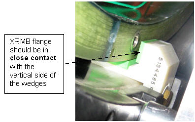
At the patient end of the magnet, attach the XRMB Radial Alignment Tool (5266408) to the magnet interface ring at 0° (top) using M10 studs and nuts. (See Illustration 34.)
Slowly rotate the XRMB Coil to align its 0° bolt hole with the slot opening in the Radial Alignment Tool. Once aligned, put the thumbscrew through the Alignment Tool slot and thread it into the 0° hole in XRMB Coil. (See Illustration 32.)
Illustration 32: Using Radial Alignment Tool
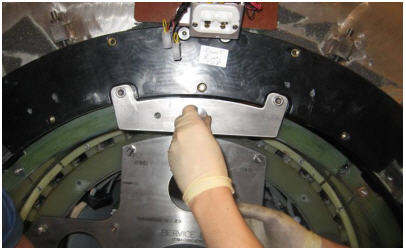
Apply red Loctite® (#271) to the 135° and 225° holes in the patient-end magnet flange.
Attach the 135° and 225° wedge to the magnet flange using one M10 x 30 brass bolt (5110638-64) and two G10 flat washers (5146169).
Tighten the brass screws firmly to secure the wedges.
Illustration 33: Installing the Lower Wedges
Repeat Step 20 for the 180° wedge.
Repeat Step 20 at the service end to secure the 135°, 225° and 180° wedges at this end.
| ||||
| Keep the Radial Alignment Tool attached and secured during this step. | ||||
Slowly lower Support Plate bearing and Tube Jack. (The full weight of the XRMB is now loaded onto the six lower wedges.)
Illustration 34: Lowering XRMB with Radial Alignment Tool Attached

Use the same method as described in Step 20 and install the 90° and 270° wedge to both ends of the XRMB Coil.
Illustration 35: Installing Middle Wedges
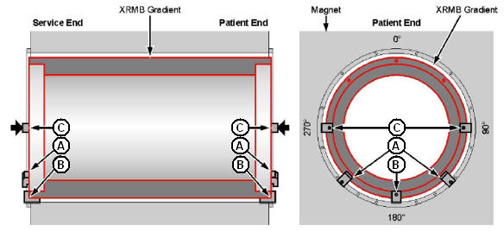
Use the same method in Step 20 to install the 45° and 315° wedges to both ends of the magnet.
Illustration 36: Installing Upper Wedges
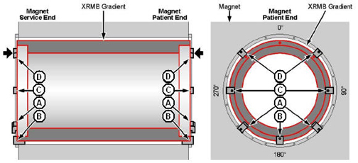
Remove the Radial Alignment Tool. Replace the original screws in the Magnet Interface Ring.
Use the same method as in Step 20 to install the 0° wedge to the patient end of the XRMB Coil.
Restoring Insertion Tool Kit
Move the cart out of the magnet room.
While one person is holding the Male Insertion Tube at the service end, the other person will unthread the Female Insertion Tube from the assembly. It will take two people to return it to the shipping crate.
Remove the safety pin from the Pilot shaft of the Male Insertion Tube, and the Male Insertion Tube from the magnet.
Disassemble the Standoff from the Male Insertion Tube, restore the Pilot Shaft to the Tube, and return all components to the shipping crate.
Remove the two mounting Plates with the Tube Guide Roller Assembly from the XRMB and place them back to the shipping crate.
Remove the Tube Support Plate and studs from the magnet, and return them to the shipping crate.
| ||||
| XRMB Coil Damage! | ||||
| The XRMB Coil is temperature sensitive. Exposure to temperatures below 0° C could result in coil damage. | ||||
| Do NOT expose the coil to temperatures below 0° C. |
Ensure the temperature data logger is shipped back with the coil. The temperature data logger has to be attached to the coil. Arrange for temperature controlled transportation prior to removal of the XRMB Coil.
| NOTE: | For international shipment, if the coil has been exposed to temperatures below 0° C, return the defective gradient coil in the original crate. For domestic shipments, use the temperature controlled mode of transportation to return the defective coil. |
For XRMB electrical connection, refer to XRMB Solid Busbar Replacement.
If the barb fitting was cut out of XRMB coolant hose connection:
Verify that the hose has a straight or perpendicular cut.
Push the hose onto the fitting.
If barb fitting remained in the manifold hose:
Apply Teflon tape (two layers) to the one-inch male threads.
When looking at the free end of the valve, rotate it six full, clockwise revolutions to start threading the barb fitting into the valve, and tighten firmly with wrenches to prevent leaks.
Open the PVC valves at the Coolant Hose and XGD Heat Exchanger.
Turn On the XGD Heat Exchanger, and start the Gradient Coil coolant circulation.
Immediately exam the hose connection at the XRMB service end. If any water leakage is observed, stop the coolant circulation, and retighten fitting to the valve.
If required, add more coolant fluid to the tank at XGD Heat Exchanger.
Restore all Passive Shim Trays to the XRMB Coil in the correct order.
WARNING: Passive shim trays are highly ferrous. Heed all warnings in safety section 3.3.
Procedure for replacing shim trays can be found in the Magnet and Cryogens Subsystem Manual. For MR750, see Direction Number 5500099. For MR450. see Direction Number 2325852.
Reinstall the RF Body Coil described in RF Body Coil Replacement.
Apply air seal along the ID on the XRMB endplate (Service end only).
Illustration 37: Applying Air Seal to XRMB (Service End)
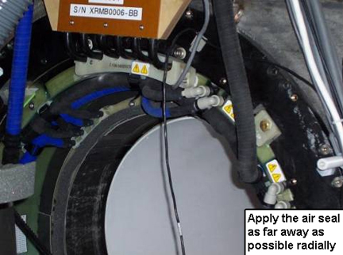
Reinstall the end bells.
Reinstall the bridge.
Perform all applicable calibrations.